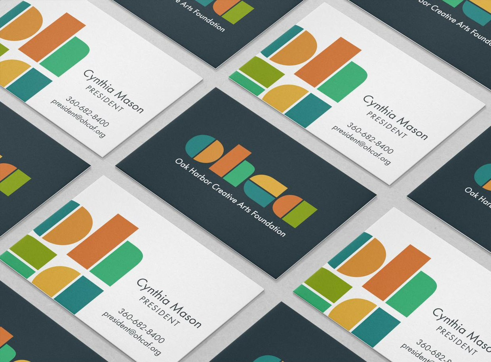
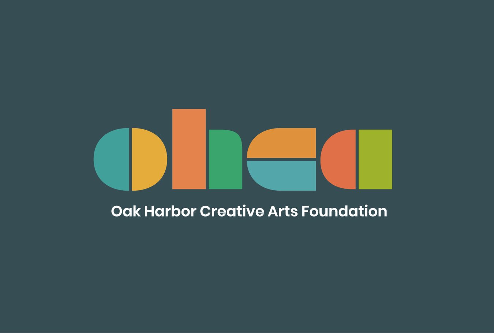
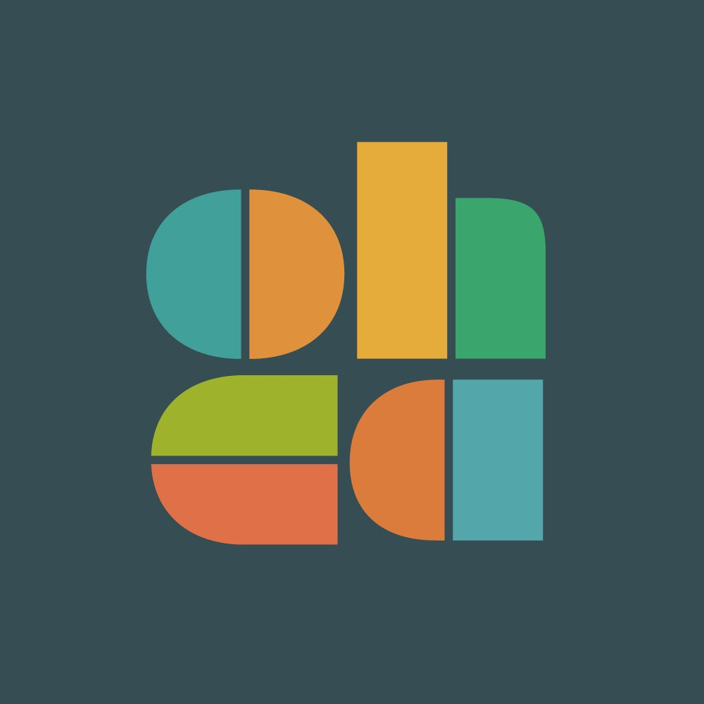
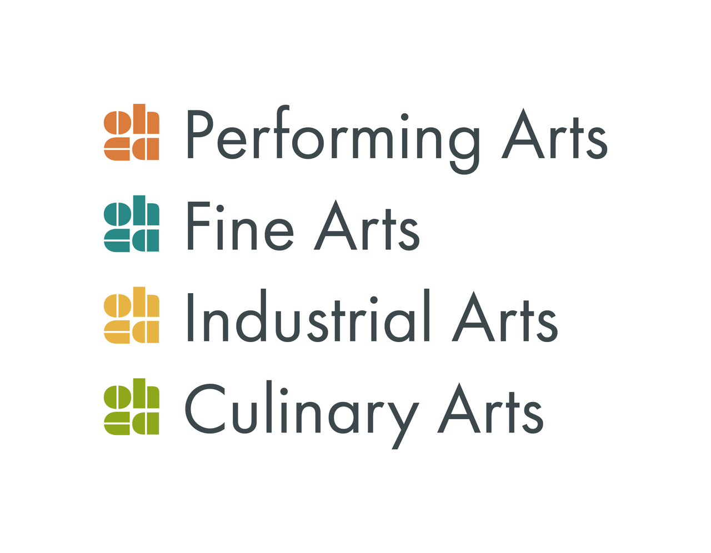
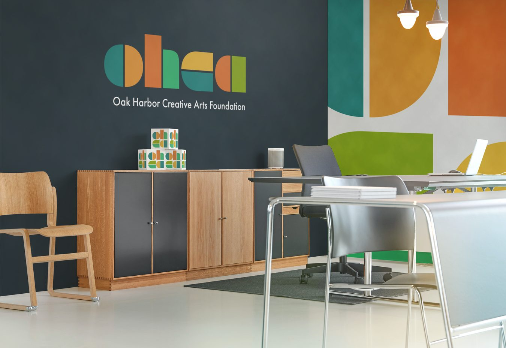
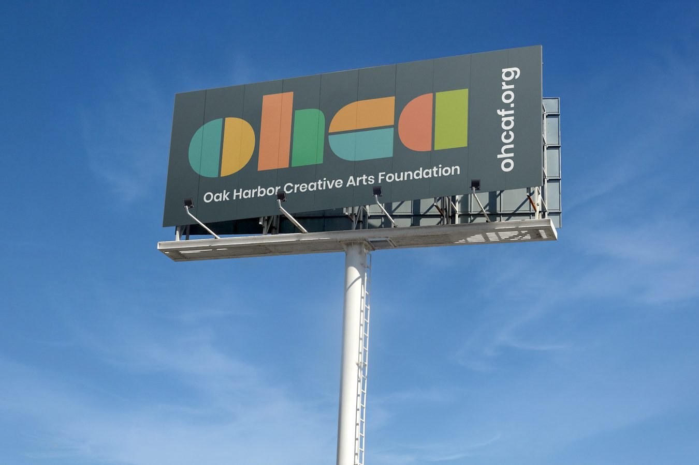
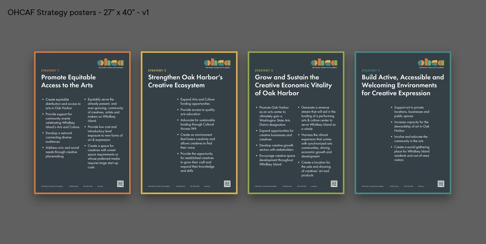

Oak Harbor Creative Arts Foundation
A modular geometric identity for a nonprofit arts foundation: a mark built from simple shapes that flexes across divisions, print, and public signage.

Overview
Oak Harbor Creative Arts Foundation supports performing, fine, industrial, and culinary arts across its community. The foundation needed an identity that could represent all four disciplines under one mark, hold up on everything from a billboard to a business card, and read as warm and welcoming rather than corporate.
A brand built on community
Early direction work set the tone before any shapes were drawn: the foundation is warm, positive, and expert, a good neighbor as much as an arts organization. Its core purpose is to bring people together and celebrate creativity in daily life, not just on a stage or in a gallery.
A mark built from simple shapes
The wordmark is constructed entirely from basic geometric forms (circles, half-circles, and rectangles) arranged into the letterforms "oh" and "ca." That construction system is what makes the mark so flexible: the same shape logic scales down to a small monogram or stands alone as a colorful geometric pattern, without ever needing a second logo.


Color as division
Each of the foundation's four program areas (performing arts, fine arts, industrial arts, and culinary arts) carries its own color from a shared palette. A viewer can identify which division a piece of material belongs to at a glance, while the palette itself stays cohesive across every application.



Print, in the field
Alongside the identity, a set of large-format strategy posters translates the foundation's four-part plan (access, ecosystem, economic vitality, and community environments) into a consistent series, each keyed to its own accent color from the same palette.

Outcome
The foundation has a single, flexible mark that scales from a monogram to a billboard without losing coherence, plus a color system that lets each program area stand on its own while remaining recognizably part of one identity.